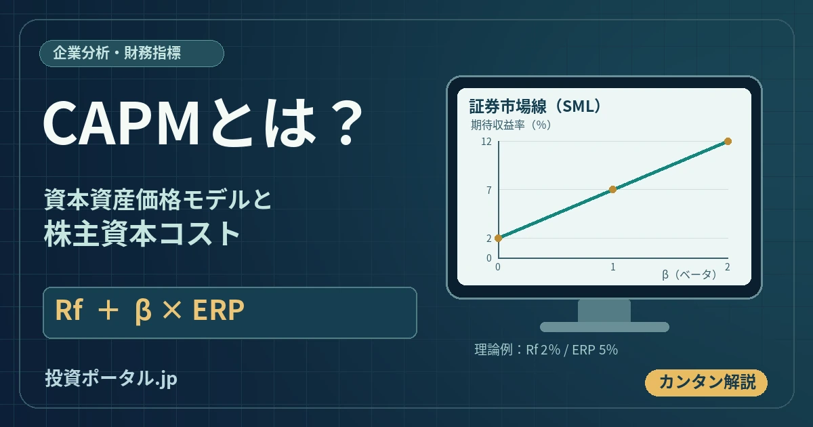

企業分析・財務指標
CAPM（資本資産価格モデル）とは？株主資本コストの計算方法とβ・株式リスクプレミアムの関係を初心者向けに解説
企業の株主資本コストはどのように決まるのでしょうか。CAPMは、株式市場のリスクと期待収益率の関係を整理するモデルです。βや株式リスクプレミアムの意味から、WACC・企業価値評価へのつながりまで、架空の計算例と図解で学びます。

目次
- CAPM（資本資産価格モデル）とは？
- なぜ投資家はリスクに見合った収益を求めるのか？
- CAPMの計算方法・計算式
- リスクフリーレートとは？
- β（ベータ）とは？市場との連動性
- βの計算方法と推計条件
- 株式リスクプレミアムとは？
- CAPMを実際に計算してみよう
- 証券市場線（SML）とは？
- システマティックリスクと非システマティックリスク
- CAPMと分散投資の関係
- CAPMとWACCの関係
- CAPMとROE・ROICの関係
- CAPMとDCF法・企業価値評価の関係
- 金利や市場環境が変わるとどうなる？
- 日本企業の資本コスト経営とCAPM
- CAPMの前提条件と限界
- 初心者が誤解しやすいポイントと注意点
- 初心者向けチェックリスト
- FAQ｜よくある質問
- まとめ
- 関連記事・関連教材
- 参考資料・出典
CAPM（資本資産価格モデル）とは？
CAPM（Capital Asset Pricing Model、キャップエムなどと読む）は、資産の市場全体に対するリスクと期待収益率の関係を説明するモデルです。日本語では資本資産価格モデル、資本資産評価モデルなどと呼ばれます。
市場全体の値動きにどの程度反応する資産なのかを考え、それに見合う期待収益率を推計します。企業分析では、株主が資金提供に対して求める収益率、つまり株主資本コストを見積もる代表的な方法です。
現代ポートフォリオ理論を背景に、William Sharpe、John Lintner、Jan Mossinらが1960年代に発展させました。WACCやDCF法にもつながりますが、将来の株価や実際の収益率を正確に予測するものではありません。参考資料
なぜ投資家はリスクに見合った収益を求めるのか？
同じ期間、同じ通貨で投資先を考えるとき、結果が不確かな資産を選ぶには、それに見合う収益を期待したいと考えるのが自然です。CAPMでは特に、市場と一緒に動くことで分散後も残るリスクに注目します。
| 投資対象 | リスクの特徴 | 想定期待収益率 |
|---|---|---|
| リスクの極めて低い資産 | 比較的小さい | 2％ |
| 市場平均に近い株式投資 | 市場変動リスクがある | 7％ |
| 市場感応度が高い株式 | 市場変動の影響を受けやすい | 9.5％ |
すべて説明用の仮定です。実際の商品利回りや将来の投資成果ではありません。
| 用語 | 意味 |
|---|---|
| 期待収益率 | 将来の収益率を確率や予想に基づいて見積もった値 |
| 実現収益率 | 投資後に実際に得た収益率 |
| 要求収益率 | そのリスクを引き受けるために投資家が必要と考える収益率 |
| 損失の可能性 | 実際の収益率がマイナスになることもある |
基本CAPMの均衡では期待収益率と要求収益率が対応しますが、現実に投資家がそれぞれ予想する収益率と要求する収益率は異なり得ます。値動きが激しいだけで期待収益率が高くなるわけではありません。関連：リスクとリターンの関係
CAPMの計算方法・計算式
まず、リスクのない基準資産で得られる収益率を出発点とし、市場リスクを引き受ける分の追加収益率を考えます。
E(Ri) ＝ Rf ＋ βi ×［E(Rm) − Rf］
株主資本コスト ＝ リスクフリーレート ＋ β × 株式リスクプレミアム
| 記号 | 意味 |
|---|---|
| E(Ri) | 対象資産の期待収益率 |
| Rf | リスクフリーレート |
| βi | 対象資産の市場リスクへの感応度 |
| E(Rm) | 市場ポートフォリオの期待収益率 |
| E(Rm) − Rf | 市場リスクプレミアム |
| βi ×［E(Rm) − Rf］ | 対象資産の市場リスクに対応する期待超過収益率 |
理論上の市場ポートフォリオはリスクのある資産全体を含むものです。実務では株価指数などを代理にするため、市場リスクプレミアムを株式リスクプレミアムとして扱うことが一般的です。両者を厳密に同一とは考えません。
リスクフリーレートとは？
Risk-Free Rate（Rf）は、理論上、対象通貨・対象期間において収益率が確実な資産の収益率です。実務では信用リスクが極めて低い国の国債利回りを近似値として用いる場合があります。円建て評価なら日本国債、ドル建てなら米国債などが候補です。企業の長期評価では長期国債利回りが参考になります。
- 評価対象のキャッシュフローと同じ通貨・適切な期間の金利を使う。
- 名目キャッシュフローには名目割引率、実質キャッシュフローには実質割引率を対応させる。
- 国債でも発行国の信用リスク、満期前の価格変動、インフレによる購買力低下がある。クーポンの再投資リスクにも注意する。
- 政策金利そのものではなく、短期金利と長期金利も無条件に置き換えられない。
本記事の2％などは架空の年率です。実際の金利水準は掲載していません。関連：長期金利 ／ 政策金利 ／ 実質金利 ／ 国債価格と利回り ／ 金利の種類と関係
β（ベータ）とは？市場との連動性
βは市場収益率が変わるとき、対象資産の収益率がどの程度変化する傾向があるかを表す指標です。β＝1.5なら、市場収益率が1％ポイント高くなったとき、線形関係で説明される個別株収益率の変化は＋1.5％ポイントです。市場が下落する方向でも感応度が働きます。
| β | 意味 |
|---|---|
| β＝1 | 市場と同程度の感応度 |
| β＞1 | 市場変動に対する感応度が比較的大きい |
| 0＜β＜1 | 市場変動に対する感応度が比較的小さい |
| β＝0 | 市場収益率との線形な共変動がない |
| β＜0 | 市場と逆方向に連動する傾向 |
βは個別株の値動き全体の大きさではありません。β＝1でも市場と完全に同じ値動きにはならず、β＝0でも価格変動や損失はあり得ます。負のβでも毎回逆方向に動くとは限らず、高いβが高い利益を保証するものでもありません。
βの計算方法と推計条件
βi ＝ Cov(Ri, Rm) ÷ Var(Rm)
Covは対象資産と市場の収益率の共分散（一緒に変動する傾向）、Varは市場収益率の分散（平均からのばらつきの二乗の平均に対応する量）です。分散が正の場合、共分散を市場の分散で割ることで市場への感応度を求めます。
0.0006 ÷ 0.0004 ＝ 1.5
収益率を小数で扱った架空の例です。共分散が0.0006、市場収益率の分散が0.0004ならβは1.5となります。散布図では市場収益率を横軸、個別株収益率を縦軸とし、切片を含む回帰直線の傾きがβに相当します。
- 市場の代理指数（TOPIX、S&P500など）と通貨
- 過去データの期間、日次・週次・月次の頻度
- 配当や株式分割の調整方法
- 企業の事業構成や借入など財務構成の変化
これらによって推計値は異なります。理論上の市場ポートフォリオを株価指数で完全に観測できるわけではありません。同業他社のβから事業リスクを推計し、自社の財務レバレッジに合わせて調整するボトムアップ・ベータという方法もあります。アンレバードβ・レバードβの詳しい計算はここでは扱いません。
株式リスクプレミアムとは？
株式リスクプレミアム（Equity Risk Premium：ERP）とは、株式市場のリスクを負うことに対して、リスクフリーレートよりも上乗せして期待する収益率です。
株式リスクプレミアム ＝ 株式市場の期待収益率 − リスクフリーレート
株式市場の期待収益率が7％、リスクフリーレートが2％なら、差は5％ポイント（年率の差）です。
| 方法 | 考え方 | 注意点 |
|---|---|---|
| 過去の実績 | 株式と安全性の高い資産の過去収益率の差 | 期間、算術・幾何平均などで異なる |
| インプライド・リスクプレミアム | 現在の市場価格と将来CFの想定から逆算 | 成長率や評価モデルなどに依存 |
| 投資家への調査 | 投資家や専門家の期待を調べる | 回答者や調査時期に依存 |
ERPは世界共通の固定値ではなく、将来の期待値と過去の実績も別です。不確実性が増して投資家の要求収益率が高まるとERPが上昇する場合がありますが、必ずそうなるとは限りません。債券の信用スプレッドは信用リスク等を反映する債券利回りの差であり、株式ERPとは別の概念です。
CAPMを実際に計算してみよう
| 項目 | 数値 |
|---|---|
| リスクフリーレート | 2％ |
| β | 1.2 |
| 株式リスクプレミアム | 5％ |
2％ ＋ 1.2 × 5％ ＝ 2％ ＋ 6％ ＝ 8％
この場合、株主資本コストは年率8％と推計されます。これは株主が求める総収益率（配当と値上がり益など）のモデル上の見積もりで、企業が毎年8％の配当を払う義務を意味せず、実際に8％儲かる保証もありません。
| β | 計算式 | 期待収益率 |
|---|---|---|
| -0.5 | 2％ − 0.5 × 5％ | -0.5％ |
| 0 | 2％ ＋ 0 × 5％ | 2％ |
| 0.5 | 2％ ＋ 0.5 × 5％ | 4.5％ |
| 1 | 2％ ＋ 1 × 5％ | 7％ |
| 1.2 | 2％ ＋ 1.2 × 5％ | 8％ |
| 1.5 | 2％ ＋ 1.5 × 5％ | 9.5％ |
| 2 | 2％ ＋ 2 × 5％ | 12％ |
ERPが正なら、他の条件が同じときβが高いほど要求収益率は高くなります。負のβの資産には市場リスクを相殺する性質があるため、モデル上はリスクフリーレートを下回る期待収益率（この例では−0.5％）となる場合があります。すべて架空の計算であり、実在する銘柄の値ではありません。
証券市場線（SML）とは？
証券市場線（Security Market Line：SML）はCAPMが示すβと期待収益率の関係を直線にしたものです。縦軸との交点はRf、傾きは市場リスクプレミアム、β＝1の点は市場ポートフォリオの期待収益率を示します。
別の方法で推計した期待収益率がSMLより上にある場合、その推計がCAPMの要求収益率を上回ると解釈できます。ただし期待収益率は観測済みの確定値ではなく、それだけで割安や購入すべき資産だとは断定できません。
| 比較項目 | 証券市場線（SML） | 資本市場線（CML） |
|---|---|---|
| 横軸 | β | 収益率の標準偏差 |
| 縦軸 | 期待収益率 | 期待収益率 |
| 対象 | 個別資産やポートフォリオ | 理論上の効率的なポートフォリオ |
| リスクの考え方 | 市場リスクへの感応度 | ポートフォリオ全体の変動リスク |
CMLはリスクフリー資産と市場ポートフォリオの組み合わせによる効率的な投資機会を表します。個別株のβを横軸とするSMLとは区別しましょう。
システマティックリスクと非システマティックリスク
| 比較項目 | システマティックリスク | 非システマティックリスク |
|---|---|---|
| 意味 | 市場全体に共通するリスク | 個別企業・事業などの固有リスク |
| 発生要因 | 景気後退、金融政策、金利、インフレ、市場混乱、広範な地政学リスク | 業績悪化、不祥事、品質問題、経営戦略の失敗、取引先への依存 |
| 分散投資による軽減 | 一般的な分散投資では除去が難しい | 適切な分散投資で軽減できる |
| CAPMとの関係 | βを通じて期待収益率に反映 | 基本モデルでは独立した上乗せの対象外 |
特定企業の問題が市場全体に波及することもあるため、実際の分類は単純ではありません。システミックリスクは金融システムの機能不全が連鎖するリスクなどを指し、システマティックリスクとは異なる用語です。
CAPMと分散投資の関係
一社に集中すれば、その会社の業績悪化や不祥事の影響を大きく受けます。異なる企業や業種に分散すれば、固有の変動が互いに打ち消されることがあります。基本CAPMでは十分な分散を前提とし、分散しても残る市場リスクに対して期待収益率の上乗せが求められます。
銘柄数を増やすだけで必ずリスクが下がるわけではありません。同じ業種に集中していれば相関が高くなる場合があります。株式比率を変えたり異なる資産を組み合わせたりすることで市場リスクへの感応度自体も調整できる場合があります。
関連：分散投資 ／ セクター投資 ／ セクター分散 ／ 資金管理・リスク管理
CAPMとWACCの関係
CAPMで求めた株主資本コストは、企業全体の資金調達コストを推計するWACC（加重平均資本コスト）の構成要素になります。株主資本と有利子負債の時価比率で重み付けし、負債の税効果を考慮します。
| 項目 | CAPM | WACC |
|---|---|---|
| 日本語名称 | 資本資産価格モデル | 加重平均資本コスト |
| 性質 | リスクと期待収益率のモデル | 企業全体の資本コストの推計値 |
| 目的 | 株主資本コストなどの推計 | 株主資本と負債を合わせたコスト |
| 計算要素 | Rf・β・市場リスクプレミアム | 株主資本コスト・負債コスト・資本構成・税率 |
| 主な利用場面 | 株主価値評価・投資理論 | 事業価値評価・資本効率 |
| 項目 | 数値 |
|---|---|
| 株主資本コスト（CAPM） | 8％ |
| 株主資本の時価 | 60億円 |
| 有利子負債の時価 | 40億円 |
| 税引前負債コスト | 3％ |
| 税率 | 30％ |
WACC ＝ 0.6 × 8％ ＋ 0.4 × 3％ ×（1 − 0.30）
＝ 4.8％ ＋ 0.84％ ＝ 5.64％
税引後負債コストは2.1％です。資本構成と税効果の詳細はWACC（加重平均資本コスト）とは？で整理しています。
CAPMとROE・ROICの関係
| 収益性の指標 | 対応する資本コスト |
|---|---|
| ROE（自己資本利益率） | 株主資本コスト |
| ROIC（投下資本利益率） | WACC |
株主の要求収益率に対して企業がどの程度の資本収益性を上げているかを考える場合、ROEと株主資本コストとの差（エクイティスプレッド）が参考になります。
エクイティスプレッド ＝ ROE − 株主資本コスト
| 企業 | ROE | 株主資本コスト | 差 |
|---|---|---|---|
| A社 | 12％ | 8％ | ＋4％ポイント |
| B社 | 8％ | 8％ | 0％ポイント |
| C社 | 5％ | 8％ | −3％ポイント |
過去の実績ROEと将来の要求収益率では期間や前提が異なります。株価には成長性、財務レバレッジ、収益の持続性、市場予想、現在の株価なども影響するため、差の正負だけで将来の株価は判断できません。ROICスプレッドはROIC−WACCで、比較対象が異なります。関連：ROIC・ROE・ROAの違い ／ 自己資本比率・D/Eレシオ・有利子負債
CAPMとDCF法・企業価値評価の関係
DCF（Discounted Cash Flow）法では、将来のキャッシュフローを対応する割引率で現在価値に換算します。誰に帰属する現金の流れかによって使う割引率が変わります。
| 評価対象 | 割引率 | 評価の対象 |
|---|---|---|
| FCFE（株主に帰属するフリーキャッシュフロー） | 株主資本コスト | 株主価値 |
| FCFF（株主・債権者に帰属するフリーキャッシュフロー） | WACC | 事業価値 |
株主資本コスト
WACC（例：5.64％）
例えば1年後の正の現金100円を8％で割り引くと約92.59円、9％なら約91.74円です。同じ正のキャッシュフローなら割引率が上がるほど現在価値は下がります。ただし実際にはキャッシュフローや成長率、市場予想、需給も変化します。
一般的なFCF（営業CF−設備投資など）を無条件にFCFF・FCFEと同じものとして割り引かないでください。定義と資金提供者への帰属が重要です。
関連：フリーキャッシュフローとは？ ／ EBITDAとは？
金利や市場環境が変わるとどうなる？
CAPMの推計値は、基準金利、市場リスクへの感応度、リスクプレミアムの変化に応じて動きます。各ケースを基準から独立して比較します。
| 想定状況 | Rf | β | ERP | 株主資本コスト |
|---|---|---|---|---|
| 基準ケース | 2％ | 1.2 | 5％ | 8％ |
| 基準金利の上昇 | 3％ | 1.2 | 5％ | 9％ |
| ERPの上昇 | 2％ | 1.2 | 6％ | 9.2％ |
| βの上昇 | 2％ | 1.5 | 5％ | 9.5％ |
| 基準金利の低下 | 1％ | 1.2 | 5％ | 7％ |
| 複数の要素が変化 | 3％ | 1.5 | 6％ | 12％ |
- 他の条件が一定ならRfの上昇は株主資本コストを上昇させる。
- ERPが正ならβの上昇は株主資本コストを上昇させる。
- βが正ならERPの上昇は株主資本コストを上昇させる。
実際の市場では複数の要素が同時に変わり、金利上昇と同じ幅で株主資本コストが上がるとは限りません。WACCや現在価値の変化につながる場合があります。関連：金利上昇 ／ リスクオフ ／ 景気後退
日本企業の資本コスト経営とCAPM
東証は2023年3月からプライム・スタンダード市場の上場会社に、資本コストと資本収益性の把握、経営改善の計画・開示、投資家との継続的な対話を求めています。2026年4月のアップデートでは経営資源の配分にも重点が置かれました。
CAPMで株主資本コストを推計しROEと比較する、WACCを推計しROICと比較する、といった考え方は事業投資や経営資源配分、収益性改善を検討する手掛かりになります。東証の要請はCAPMの採用や一律の資本コスト設定を義務付けるものではありません。東証公式資料
JPXプライム150指数での実務例
JPXプライム150指数は、エクイティスプレッドとPBRを用いて価値創造を評価する指数です。2026年7月24日版の算出要領では、対象銘柄の株主資本コストに日本国債10年利回りとβ、TOPIXの長期年率換算リターンを使うCAPM型の式を採用しています。βは原則として直近60か月の月次収益率から推計し、0.5～2.0に調整する規定もあります。これは指数のための独自の推計ルールであり、全企業に共通する唯一の計算法ではありません。公式算出要領
定期入替では時価総額上位を対象とし、推定エクイティスプレッドとPBRの二つの基準を使います。指数・構成銘柄への投資を推奨するものではありません。
CAPMの前提条件と限界
基本モデルの前提
- 合理的でリスク回避的な投資家が期待収益率と分散に基づいて選択する。
- 投資期間や市場に対する期待が共通している。
- 十分な分散ができ、資産を取引・分割できる。
- 税金・取引費用などの摩擦がなく、同じリスクフリーレートで借入・貸付が可能とする。
これらは基本形を説明するための単純化です。拡張モデルでは前提が変わることがあります。
現実の市場との違い
- 将来予測は投資家ごとに異なり、理論上の市場ポートフォリオを完全に観測しにくい。
- βは指数や推計期間に依存し、事業構造の変化などで時間とともに変わる。
- ERPの推計方法によって値が異なり、株主資本コストに唯一の正解はない。
- 企業規模、割安度、収益性や投資家行動、市場の非効率性なども収益率に影響し得る。
FamaとFrench（2004）はCAPMの実証結果が理論の予測と十分には一致せず、市場ポートフォリオの代理を用いた検証にも課題があると論じています。実務で広く使われてきたことと、現実を正確に説明できるかは別の問題です。研究資料
| モデル | 基本的な考え方 |
|---|---|
| ファーマ・フレンチ3ファクターモデル | 市場要因に企業規模と簿価時価比の要因を加える |
| ファーマ・フレンチ5ファクターモデル | 3要因に収益性と投資の要因を加える |
| APT（裁定価格理論） | 複数の共通リスク要因と裁定機会がないことに基づく |
| その他のマルチファクターモデル | 複数の要因で収益率を説明する |
CAPMは簡潔で比較の出発点に使えますが、前提や推計の不確実性を意識して、別の方法や感応度分析と併用することが重要です。
初心者が誤解しやすいポイントと注意点
| 誤解 | 正しい理解 |
|---|---|
| 株価を正確に予測できる | リスクに対応する期待収益率のモデル |
| 8％なら毎年8％儲かる | 実現収益率は保証されない |
| βは価格変動全体の大きさ | 市場への感応度 |
| β＝1なら市場と同じ値動き | 感応度が1という意味 |
| β＝0なら無リスク | 企業固有の変動や損失はあり得る |
| 高βなら必ず利益が大きい | 条件付きで要求収益率が高くなる |
| 国債は完全に無リスク | 信用・価格・インフレ等のリスクがある |
| ERPは固定値 | 市場・時点・方法で異なる |
| 株主資本コスト＝配当利回り | 値上がり益も含む要求収益率 |
| CAPM＝WACC | モデルと企業全体の資本コストは異なる |
| 分散で全リスクをなくせる | 市場全体に共通するリスクは残る |
過去のβや収益率をそのまま将来に当てはめず、通貨・期間・推計方法の整合性を確認してください。期待収益率の高さやβの低さだけで投資対象を選ばず、業績、財務健全性、収益性、株価水準なども確認しましょう。
初心者向けチェックリスト
企業の開示資料や金融理論を読むときの確認項目です。売買を促すものではありません。
- リスクフリーレートの意味を理解したか
- 国債利回りの通貨・期間を確認したか
- βが市場感応度であることを理解したか
- βの算定期間と市場指数を確認したか
- ERPの推計方法を確認したか
- 期待収益率と実現収益率を区別したか
- 市場リスクと企業固有リスクを区別したか
- 株主資本コストとWACCを区別したか
- ROEと株主資本コストの比較条件を確認したか
- CAPMの前提と限界を理解したか
- 一つの指標だけで投資判断していないか
FAQ｜よくある質問
CAPMとは何ですか？
市場リスクと期待収益率の関係を説明する金融理論です。
CAPMは何と読みますか？
キャップエムなどと読みます。
CAPMはどのように計算しますか？
リスクフリーレート＋β×市場リスクプレミアムです。
CAPMは何のために使われるのですか？
株主資本コストの推計、リスクと期待収益率の理解、企業価値評価などに使われます。
βとは何ですか？
市場収益率に対する対象資産の感応度です。
βが1より大きいとは？
市場への線形な感応度が比較的大きいという意味です。
βが0の資産は安全ですか？
いいえ。企業固有リスクなどは残ります。
βがマイナスになることはありますか？
あります。市場と逆方向の共変動がある場合です。毎回逆方向に動く保証はありません。
リスクフリーレートには何を使いますか？
通貨や評価期間に対応する、信用リスクの低い国の国債利回りなどを近似値として用います。
株式リスクプレミアムとは何ですか？
株式市場の期待収益率からリスクフリーレートを引いた期待超過収益率です。
CAPMとWACCは何が違いますか？
CAPMは株主資本コストなどの推計モデル、WACCは株主資本と負債を合わせた資本コストです。
CAPMで計算した収益率は実際に得られますか？
保証されません。実際には市場や企業の状況で変化します。
金利上昇は株主資本コストにどう影響しますか？
他の条件が一定で基準金利が上昇すれば推計値は上がります。実際にはERPやβも変化します。
CAPMにはどのような限界がありますか？
市場の代理指数、β、ERP、理論上の前提などに不確実性があり、実際の収益率を十分説明できない場合があります。
まとめ
- CAPMは市場リスクと期待収益率の関係を説明する金融理論。
- リスクフリーレート・β・株式リスクプレミアムから期待収益率を推計する。
- βは市場全体の値動きへの感応度であり、企業固有のリスクは適切な分散によって軽減できる場合がある。
- CAPMは株主資本コストを推計する代表的な方法で、WACCやDCF法、ROEとの比較に応用できる。
- 理論上の前提と実証上の限界があり、推計値は実際の投資成果を保証しない。
数式を覚えるだけでなく、リスクの種類と資金提供者が求める収益率の関係を理解することが、企業の資本コストや価値評価を学ぶ第一歩です。
参考資料・出典
- William F. Sharpe（1964）: Capital Asset Prices: A Theory of Market Equilibrium under Conditions of Risk：CAPMの理論的背景・原著論文
- Fama & French（2004）: The Capital Asset Pricing Model: Theory and Evidence：理論と実証上の課題（大学公開PDF、DOI: 10.1257/0895330042162430）
- Aswath Damodaran（NYU Stern）: Estimating Inputs for Valuation：株主資本コスト・割引率の実務
- Aswath Damodaran: The CAPM in Practice：Rf・ERP・βの推計
- Aswath Damodaran: Discount Rates：事業リスクと株主リスク・割引率
- 日本取引所グループ：資本コストや株価を意識した経営の実現に向けた対応：東証の要請と投資家との対話
- 日本取引所グループ：JPXプライム150指数：指数の概要と評価軸
- JPX総研：東証指数算出要領（JPXプライム150指数編、2026年7月24日版）：選定方法・株主資本コストの算定（特に8～9ページ）
確認日：2026年11月27日。本文の数値・グラフは説明用の架空例であり、実際の市場データや企業の推計値ではありません。
一般ユーザー目線の体験でおすすめの会社をご紹介

ご利用にあたっての注意事項
本記事は金融教育・一般的な情報提供を目的とし、特定の有価証券や金融商品の購入・売却を勧誘するものではありません。株式投資には価格変動等による損失の可能性があります。推計値は将来の成果を保証しません。最新の公式資料・企業開示等を確認し、ご自身の判断と責任でお取引ください。